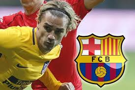
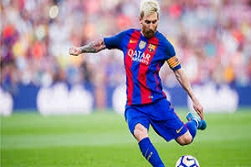
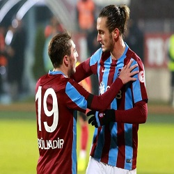
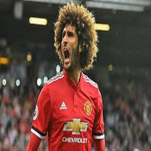

|

ÞAMPÝYONLAR LÝGÝ EÞLEÞMELERÝ
UEFA Þampiyonlar Ligi'ndeki temsilcimiz Beþiktaþ'ýn, Son 16 turuna grup lideri olarak katýldýðý kura çekimi, yapýldý. Peki Beþiktaþ'ýn Devler Ligi'nde 2. turda rakibi kim oldu?
Þampiyonlar Ligi G Grubu'nu lider olarak bitiren Beþiktaþ'ýn, son 16 turundaki rakibi bugün belli oldu.
Ýsviçre'nin Nyon kentindeki UEFA Genel Merkezi'nde gerçekleþtirilen UEFA Þampiyonlar Ligi son 16 turu kura çekimi, TSÝ 14.00'te baþladý.
|
|
|
|

BARCELONA'DAN GRÝEZMANN SÝNYALÝ
Ernesto Valverde, Antoine Griezmann dedikodularýna yönelik soruya yanýt verirken, transfere açýk kapý býraktý.
Barcelona Teknik Direktörü Ernesto Valverde, Antoine Griezmann transferi için küçük de olsa açýk bir kapý býraktý.
Fransa'da çýkan haberlere göre Griezmann, toplam 90 milyon euro'luk bir bedel karþýlýðýnda, gelecek sezondan itibaren Barcelona'nýn formasýný terletecek.
Valverde, bu haberle ilgili soruya "Griezmann harika bir oyuncu. Adý Barcelona'yla geçen her oyuncu harikadýr zaten. Ben elimdeki futbolcularla mutluyum. Ýlerde neler olacak göreceðiz." sözlerini kullandý.
|
|
|
|
MADRÝD'DE ROTA TÝMO WERNER
Leipzig formasýyla gösterdiði performansla göz dolduran Alman forvet Timo Werner’i izlemeye aldý.
2017 yazýnda Alvaro Morata ve Mariano Diaz’ý satan Real Madrid önümüzdeki yýllarda forvet rotasyonunda sorun yaþamamak için çalýþmalara baþladý.
Bu sezon Bundesliga’da 3 maçta 3 gol kaydeden Timo Werner’i gündemine alan Eflatun Beyazlýlar’ýn, 21 yaþýndaki forvet için Ocak ayý transfer döneminde harekete geçeceði öðrenildi.
|
|
|
|

MESSÝ BARCELONA'DAN AYRILIYOR MU ?
Yahoo Sport France'in güvenilir gazetecilerinden Romain Collet Gaudin, haberi duyuyurken, City'ye yakýn kaynaklarýn City'nin Messi ile görüþmeye hazýr olduðunu ifade etti.
Messi'nin daha önce birlikte çalýþtýðý Pep Guardiola'yla yeniden bir araya gelmek istediði haberleri daha önce basýna yansýdý. Messi'nin, Instagram'dan Manchester City'yi takip etmesi de dikkat çekti.
Messi'nin Barcelona ile yeni bir sözleþme için anlaþtýðý vurgularken; henüz imzanýn atýlmamasýnýn ardýndan transferin gerçekleþebileceði vurgulandý.
Geçen ay Barcelona, 30 yaþýndaki 5 Altýn Top ödüllü Messi ile kendisini 2021'e kadar takýmda tutacak anlaþmaya varmýþ; ancak sözleþmenin sezon öcnesi kampýnda atýlacaðý açýklanmýþtý. Buna karþýn þimdiye kadar sözleþme imzalanmadý.
|
|
|
|
|
|
|
DÜNYA'NIN 1 NUMARALI FUTBOL OYUNU
FIFA 18 þüphesiz içinde bulunduðumuz 2017 yýlýnýn en merak edilen oyunlarýndan biri. Bu merakýn temelini ise doðal olarak FIFA 17 ile yenilenen grafik motoru oluþturuyor. DICE tarafýndan üretilen Frostbite Engine’e geçen seri, bu yýl zincirlerini koparmayý amaçlýyor.
Yapým hakkýnda ilk kapýyý aralayan ise EA CEO‘su Andrew Wilson oldu. Oyun duyurulmadan çok önceleri sizlerle onun haberini de paylaþmýþtýk. Journey, yani hikaye modunu anlatan Wilson, yeni oyun ile bizleri çok daha geniþ ve detaylý bir Yolculuk modu bekleyecek. Yani FIFA 18 ile birlikte Alex Hunter’ýn merakla beklenen hikayesi de ikinci sezona kavuþuyor.
FIFA 17 ile rüþtünü ispat eden ve potansiyelini ortaya koyan The Journey, yani Yolculuk isimki tek kiþilik senaryo modu oluyor. Alex Hunter‘ýn hikayesi kaldýðý yerden, ikinci sezonu ile devam edecek. Anlatýlanlara göre, bu kez oyun içi etkileþim iyice arttýrýlmýþ durumda.
yrýca EA Sports ve Almanya Futbol Federasyonu arasýnda imzalanan anlaþmaya göre FIFA 18’e eklenecek ilk yeni lig belli oldu. Görünüþe göre FIFA 18‘e eklenen ilk yeni lig, Alman 3. Ligi olacak.
Oyunu oynamamýþ olan hayranlar içinse geçtiðimiz günlerde çok güzel bir video yayýmlandý. Yayýnlanan bu video ile birlikte FIFA 18’in bir maçýndan tam 20 dakikalýk oyun görüntüsü izleyebilirsiniz.
Son olarak, FIFA 18 satýn almak içinse artýk doðru zaman geldi. FIFA 18 PC, PlayStation, Xbox ve Nintendo Switch için ön sipariþe sunuldu. FIFA 18 fiyatý ise özellikle konsol tarafýnda biraz tuzlu görünüyor. FIFA 18 Ronaldo Edition PS4 üzerinde 309 TL gibi bir ücrete sahip.
Oyunu konsolla birlikte satýn almak isteyen içinse özel paketler hazýrlanmýþ durumda. Bu özel paketlerde PlayStation 4 ve PlayStation 4 Pro ile birlikte FIFA 18 de beraber verilecek.
|
|

CENK'E TEKLÝF YAÐIYOR
Ýngiltere Premier Lig takýmlarýnýn yakýndan takip ettiði Cenk Tosun için Ýtalyan devi Juventus devreye girdi.
Beþiktaþ'ýn yýldýz golcüsü Cenk Tosun'un talipleri artmaya devam ediyor.
son haberlere göre uzun süredir Crystal Palace ve Newcastle United baþta olmak üzere bir çok Ýngiltere Premier Lig kulübünün transfer listesine giren Cenk Tosun'a Ýtalyan devi Juventus talip oldu.
Ýtalyanlar Cenk Tosun için 15 milyon euro'luk teklif yapmaya hazýrlanýyor.
Beþiktaþ baþkaný Fikret Orman ise Cenk Tosun için 20 milyon euro bonservis bedeli talep ediyor.
|
|
|

YUSUF VE ABDÜLKADÝR AVRUPANIN RADARINDA
Trabzonspor'un genç yýldýzlarý Yusuf Yazýcý ve Abdülkadir Ömür hakkýnda beIN Sports'ta Þansal Büyüka'dan flaþ bir iddia geldi. Bordo mavili takýmda gelecek açýsýndan umut veren iki futbolcuya Avrupa'dan büyük kulüplerin talip olduðu ve izlemeye alýndýklarý öne sürüldü.
Þansal Büyük, beIN Sports programýnda yayýnlanan beIN final programýnda kulüpten onaylanan bilgi þeklinde konuþarak, "Yusuf Yazýcý'yý Monaco, Abdülkadir Ömür'ü ise Benfica'nýn takip ettiðini." söyledi.Ayný zamanda Bayern Münih ve Atletico Madrid'inde iki yýldýza
ilgileri sürüyor
|
|
|
|

Fellaini'de Vida taktiði!
Fellaini ile 1.5 ay sonra görüþme hakkýný kazanacak olan Beþiktaþ, kulübü M.United’a da iki milyon Euro önerecek. Bu teklif kabul edilmezse yýldýz futbolcu sezon sonunda bedelsiz olarak transfer edilecek.
Beþiktaþ sezon öncesi kulübü Dinamo Kiev'le sözleþmesi Ocak ayýnda bitecek Domagoj Vida'yý kadrosuna katmak istemiþ, ancak yaptýðý bonservis teklifi kabul edilmeyince, Hýrvat stoperle ön anlaþma imzalayýp, ara transfer dönemini beklemeye geçmiþti.
Transferi bu yolla bedelsiz gerçekleþtirecek olan siyah-beyazlýlar, bir süredir gündemlerinde olan Marouane Fellaini'de de ayný yolu izleme kararý aldý… Yönetim, öncelikle Manchester United'la sözleþmesi Haziran'da sona erecek Belçikalý orta saha oyuncusu ile anlaþma saðlayacak.
|
|
|
|
|
| |